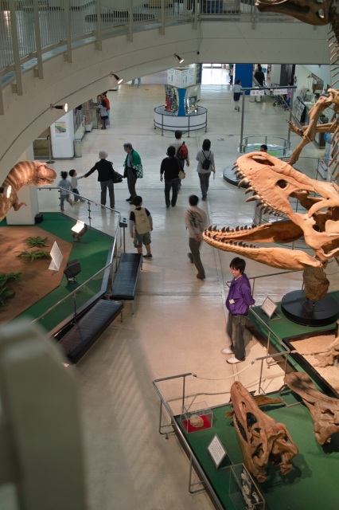

| ・科学の子(H21.11.07-08) | |||
科学の祭典に参加してきました。両日とも晴れで何よりでした。 |
|||
|
京都市青少年科学センター＠伏見区 |
14回目だそうです。 | ||
|
展示会場の様子。 |
誰もが科学の子。 | ||
|
小さいけれど力持ち。 |
次こそ乗りたい。 | ||
|

本館は無料開放。 |
フィロソフィア。読めないと思います。 | ||
|
液体ちっその実験。有名ですが観るのは初めて。 |
燃えると聞くと集まる小さい人達。 | ||
|
酸素燃焼中。 |
紙コップロケット発射。天井まで飛ぶ！ | ||
|
一番気に入ってる展示。A澤くんの参考になりそう。 |
5秒後、小さい人達に占拠される。もっと遊びたかったのに。 | ||
|
ハンドルを回すとバネと音が連動。 |
毎回小さい人が必死にハンドルを回してます。 | ||